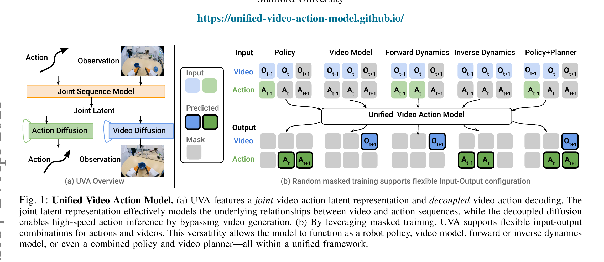

Unified Video Action Model
Li、Gao、Sadigh、Song · 2025 技术报告 · arXiv:2503.00200 v3 · Zotero XUG2GXMW
UVA 让视频和动作先在 Transformer 中形成联合 latent，但分别用轻量 video/action diffusion head 解码；策略部署时可以只运行 action head、跳过昂贵视频生成，从而把联合世界建模与高频控制兼得。
§1 Introduction：联合世界—动作模型为什么会卡在控制频率上
视频提供丰富场景与动力学监督，动作提供可控变化的因果线索，联合学习理应互补。但两种输出的工程需求相反：动作要高时间分辨率和低延迟，视频要高空间分辨率和多步生成。若策略必须先把高保真视频去噪出来再求动作，它往往追不上闭环控制；若完全删除视频分支，又失去世界建模带来的抗视觉干扰与动力学监督。
UVA 以一个 joint video-action latent 负责跨模态关系，再用轻量、解耦的 video diffusion head 与 action diffusion head 分别解码。训练时随机 mask 视频或动作，覆盖 policy、video prediction、forward/inverse dynamics 等输入输出组合；推理动作时可直接调用 action decoder，绕过视频生成而保留共享 latent 中的预测知识。
展开原文 · 核心设计
“high-speed action inference by bypassing video generation”
§2 Related Work：显式视频规划、联合 diffusion 与解耦读出
显式级联方法先生成高分辨率未来，再把它翻译成动作，能复用视频基础模型但延迟高、误差串联。直接 Diffusion Policy 快得多，却只靠动作示范理解视觉变化。PAD/UWM 将视频和动作共同去噪，证明统一建模可行；UVA 进一步把“共享表示”与“输出生成成本”分离。
它和 VPP 都避免完整视频 rollout，但方式不同：VPP 读取预训练 VDM 一次前向的 predictive feature；UVA 从头定义联合 video-action latent，并让专用动作 head 独立扩散。随机 mask 使这个 latent 不只服务 policy，也能在不同条件组合下完成世界模型查询。
§3 WAM 的结构矛盾
§4 联合序列与解耦扩散

1. 随机选择可见/待预测 token
未来观测 token 可部分或全部 mask。
输入是什么：已经训练好的模型、它在不同输入或噪声时间步上的运行记录，以及需要比较的中间数值。这里先做诊断，还没有让机器人执行新动作。
这一步究竟做什么：本步骤执行“随机选择可见/待预测 token”。具体来说，未来观测 token 可部分或全部 mask。 它把原本模糊的‘看起来对不对’拆成可重复计算或人工核对的判断，从而让不同模型能在同一标准下比较。
输出到哪里：一组诊断数值、分类结果或评测分数；它告诉后续模块当前结果哪里好、哪里需要修正。这个结果会交给下一步“Transformer 建立 video-action latent”继续处理。
为什么不能省略：没有统一诊断或评分，后续模块无法知道哪里出错，也无法公平比较两个模型是否真的进步。
2. Transformer 建立 video-action latent
动作提供因果变化线索，视频提供场景动力学。
输入是什么：来自上一步“随机选择可见/待预测 token”的产物：一组诊断数值、分类结果或评测分数；它告诉后续模块当前结果哪里好、哪里需要修正。本步骤还会按论文设置读取当前条件、时间步或训练信号。
这一步究竟做什么：本步骤执行“Transformer 建立 video-action latent”。具体来说，动作提供因果变化线索，视频提供场景动力学。 这个动作会真正改变环境，所以系统还要读取执行后的新观测，检查模型预期与现实之间的差距。
输出到哪里：一组比原始输入更紧凑的内部特征；它不是最终动作或画面。这个结果会交给下一步“训练两个专用 diffusion head”继续处理。
为什么不能省略：模型不能高效地直接在所有原始像素和长序列上推理；这一步把信息压成后续模块能处理、比较和复用的形式。
3. 训练两个专用 diffusion head
动作头无需承担视频像素复杂度。
输入是什么：来自上一步“Transformer 建立 video-action latent”的产物：一组比原始输入更紧凑的内部特征；它不是最终动作或画面。本步骤还会按论文设置读取当前条件、时间步或训练信号。
这一步究竟做什么：本步骤执行“训练两个专用 diffusion head”。具体来说，动作头无需承担视频像素复杂度。 这个动作会真正改变环境，所以系统还要读取执行后的新观测，检查模型预期与现实之间的差距。
输出到哪里：参数得到更新的模型，或能供下一轮训练使用的新监督信号。这个结果会交给下一步“部署只请求需要的输出”继续处理。
为什么不能省略：前面的数据或分数本身不会自动改变模型；必须通过损失函数把误差信号变成参数更新。
4. 部署只请求需要的输出
普通 policy 模式直接跳过 video decoder。
输入是什么：来自上一步“训练两个专用 diffusion head”的产物：参数得到更新的模型，或能供下一轮训练使用的新监督信号。本步骤还会按论文设置读取当前条件、时间步或训练信号。
这一步究竟做什么：本步骤执行“部署只请求需要的输出”。具体来说，普通 policy 模式直接跳过 video decoder。 这里处理的只是整条链路中的一个接口：把上一步的结果整理成下一步能够正确读取和继续计算的形式。
输出到哪里：可发送给机器人控制器的动作，以及执行后重新观测到的真实状态。这是图中这条链路的最终产物，随后会进入真实执行、模型更新或指标评测。
为什么不能省略：机器人动作会改变下一次观测；只有执行后重新读取现实，才能发现预测误差并阻止错误连续累积。
§5 随机 Mask 训练的任务代数
- $O_t$
- 每帧被编码成 $N$ 个视觉 token。
- $A_t$
- 每个图像间隔对应更高频的 $L$ 个动作；动作 chunk 重复/投影以匹配视觉 token 长度。
- Mask
- 训练随机遮未来视觉位置；推理可从全空未来图像开始，也可保留部分条件。
§6 为什么动作能绕过视频生成
- $Z$
- 由历史观测、历史动作和任务条件 $M$ 编码的联合时空表示。
- $D_a(Z,\epsilon_a)$
- 动作解码器从共享表示和动作噪声生成未来动作。
- $D_v(Z,\epsilon_v)$
- 视频解码器使用独立噪声生成未来观测。
- 解耦的意义
- 世界与动作在 $Z$ 中交流，但各自保留生成头和噪声过程，避免像素规模完全支配动作建模。
UVA 不是把视频模型删掉：训练时视觉预测继续塑造 $Z$；只是策略推理不必调用 $D_v$。这比“先生成清晰视频再提动作”的级联式更快，也比把高维视觉与低维动作绑在同一输出扩散链更灵活。
§7 贡献与局限
§8 实验归因与复现：速度来自哪里，世界监督又保留了多少
最小可信复现清单
- joint latent 的 token 排列、维度、跨模态 attention 与历史窗口。
- 两个 decoder 的参数量、噪声步数、schedule 与条件输入。
- 所有 mask 模式的采样概率和缺失 token 表示。
- 端到端延迟分解，包含编码、action denoise、可选 video denoise。
- 在同控制频率下比较 direct policy、联合模型和显式视频级联。
UVA 不要求动作推理支付高保真视频的全部成本；它把“共享世界知识”放在 latent，把“部署速度”交给独立 action decoder。